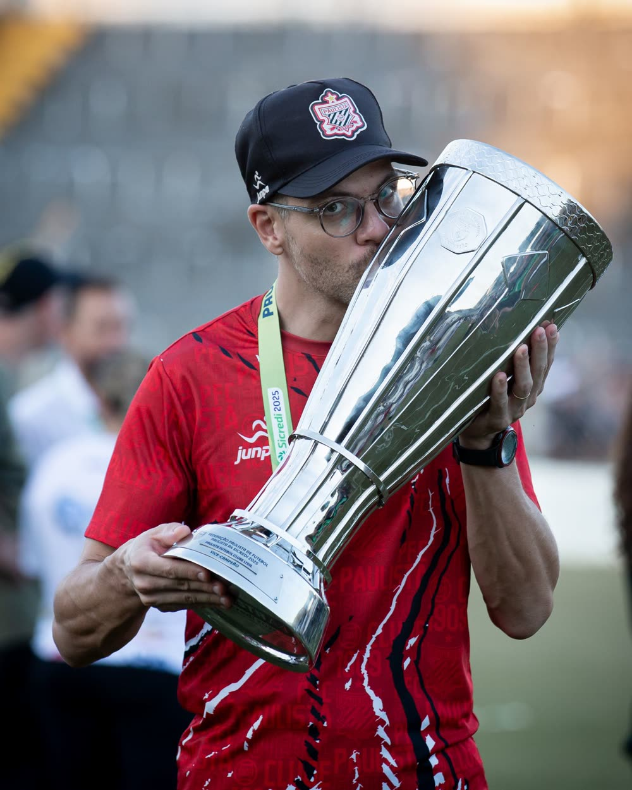
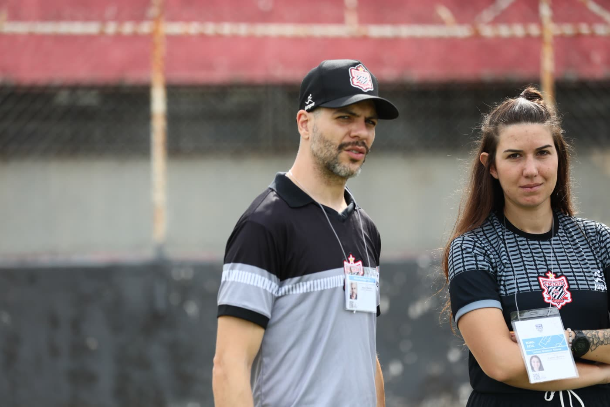
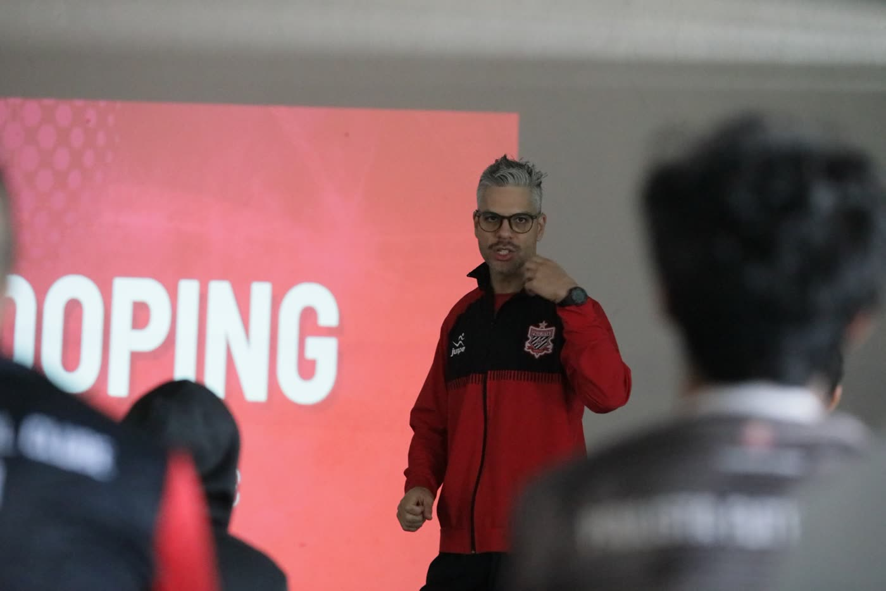
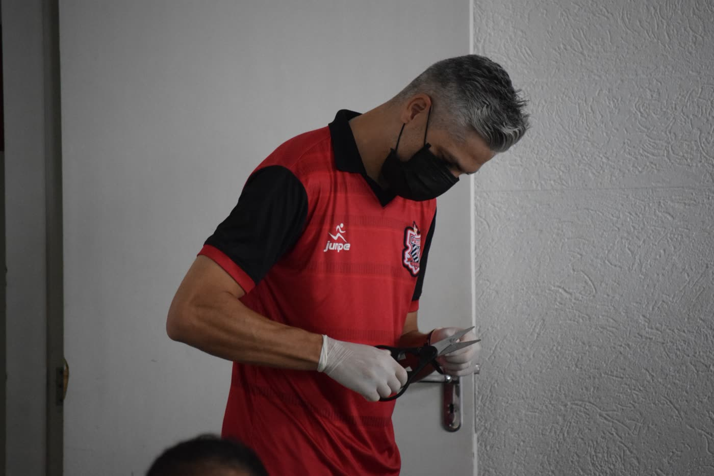

Menos inflamação, melhor recuperação
Gengivite, periodontite e focos de infecção mantêm o corpo em estado inflamatório, o que pode atrasar a recuperação muscular e a adaptação ao treino.
Dor de dente, inflamação silenciosa e uma lesão no rosto podem custar semanas de treino. Cuido da saúde bucal de atletas para que você recupere melhor, previna lesões e entregue mais na hora que importa.

Arthur Henrique Polli é cirurgião-dentista do Paulista FC, especialista em Odontologia do Esporte e em Endodontia e Microscopia Operatória, e pós-graduado em Laserterapia. Atende atletas de diferentes modalidades, do futebol ao triatlo, com foco em prevenção de lesões, recuperação e performance, e também acompanha equipes e clubes.
Você cuida de nutrição, sono, fisioterapia e carga de treino. E a boca, quando foi a última vez?
A boca é a porta de entrada do corpo. Uma infecção ali não fica ali: gera inflamação sistêmica, atrapalha o sono, a mastigação e a recuperação. E o esporte ainda agride os dentes de formas que o atleta nem imagina.
avaliados em Londres 2012 tinham cárie, e uma parcela relevante relatou impacto da saúde bucal no treino e no desempenho.
ingeridos em alta frequência, com a boca mais seca durante o esforço, aumentam o risco de cárie e erosão do esmalte.
estão entre as principais causas de trauma dentário, e protetor bucal sob medida reduz esse risco.
Fonte do dado olímpico: Needleman et al., British Journal of Sports Medicine, 2015.
Não é estética. É recuperação, prevenção e constância.
Gengivite, periodontite e focos de infecção mantêm o corpo em estado inflamatório, o que pode atrasar a recuperação muscular e a adaptação ao treino.
Protetor bucal personalizado absorve impacto e protege dentes, lábios e mandíbula. Uma queda ou cotovelada deixa de virar um problema longo.
Dor de dente, bruxismo e apertamento sob estresse roubam sono e concentração, e podem gerar tensão em mandíbula, pescoço e cabeça.
Cárie e infecção não avisam a data. Check-ups preventivos detectam cedo e evitam urgência na semana da prova ou do jogo.
Do atleta amador ao profissional, um cuidado que respeita sua rotina, calendário e objetivo.
Trabalhos apresentados e publicados pelo Dr. Arthur em congressos e periódicos da área.
Você conta sua modalidade, rotina e queixas.
Exame clínico completo, com foco em risco e performance.
Tratamento e prevenção encaixados no seu calendário.
Revisões periódicas para você nunca ser pego de surpresa.
Fotos e vídeos do dia a dia com clubes, provas e consultório.



“[Depoimento de atleta aqui. Substitua por um relato real e autorizado.]”
“[Depoimento de atleta aqui. Substitua por um relato real e autorizado.]”
“[Depoimento de atleta aqui. Substitua por um relato real e autorizado.]”
Não. Corredores, ciclistas, triatletas, lutadores e quem treina por saúde se beneficiam. Quanto maior a carga de treino, maior o ganho em prevenir.
Esportes de contato, lutas e modalidades com risco de queda ou colisão são os principais. Na avaliação, indico se faz sentido para você e qual tipo.
Infecções e inflamações na boca mantêm o organismo em alerta e podem pesar na recuperação. Tratar e prevenir remove um fator que o atleta muitas vezes nem sabe que tem.
O plano é montado em torno da sua agenda de treinos e provas, priorizando procedimentos mais conservadores e de recuperação rápida.
Sim. Entre em contato para conversar sobre avaliações em grupo e acompanhamento de elencos.
Agende sua avaliação e descubra o que sua boca está dizendo sobre o seu desempenho.